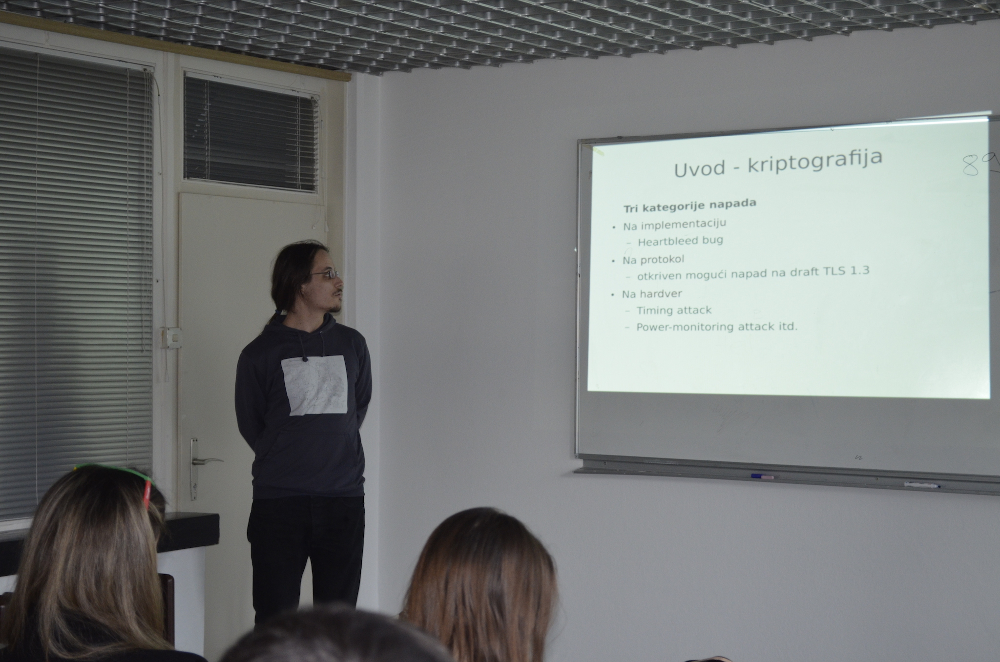
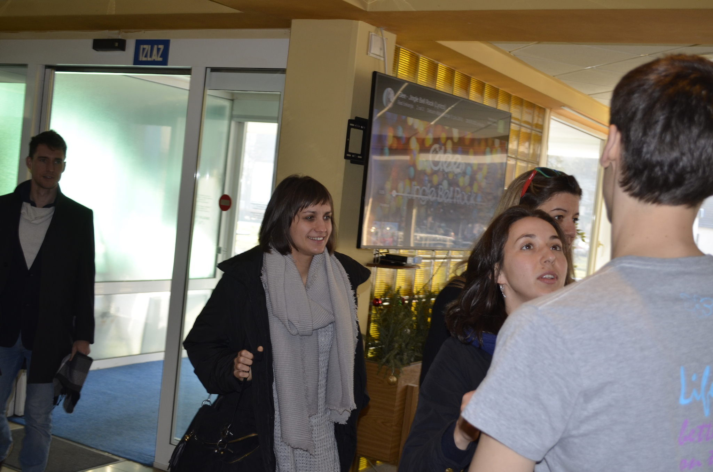
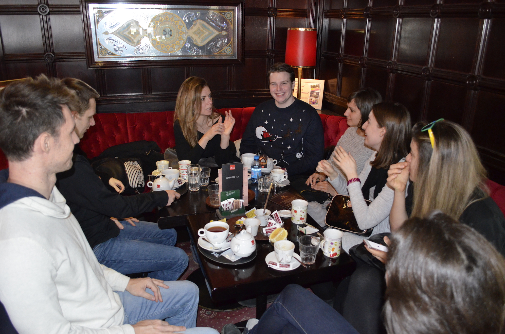
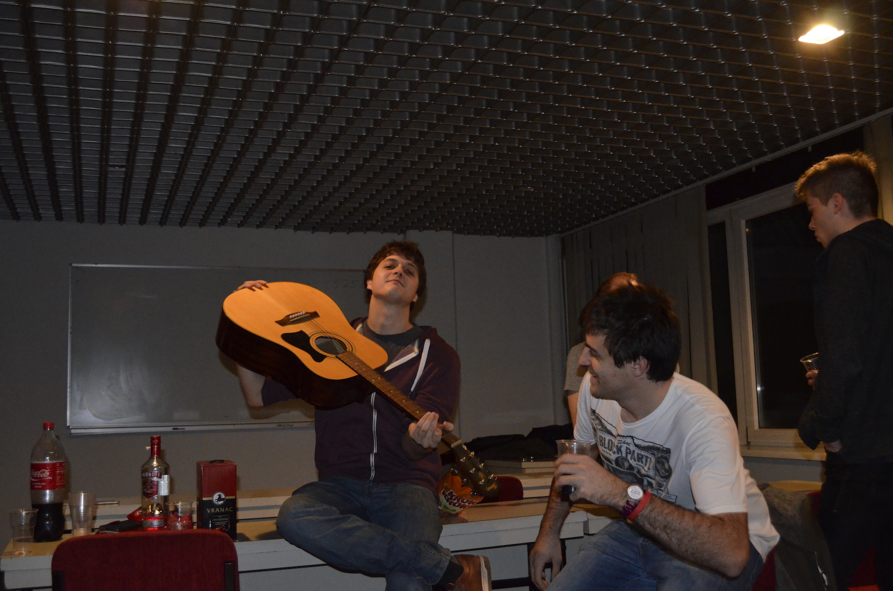
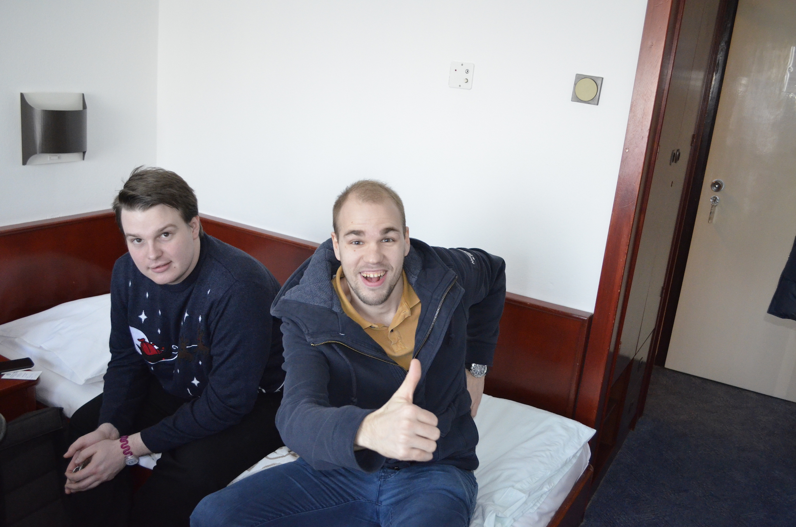
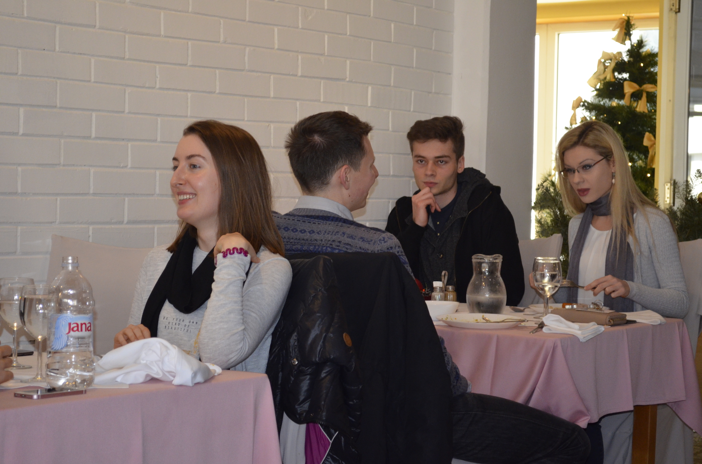

Dio sudionika s Mutimira 2016.

Ines i Antonija
Oxford i ETH

Lovro
Sveučilište u Zagrebu
Goran
Carnegie Mellon University

Ana i Vilma
EPFL i Sveučilište u Zagrebu

Sanja i Bruno
Oxford i Palantir

Anton i Filip
Google

Bruno i Andrija
Palantir i Sveučilište u Zagrebu
